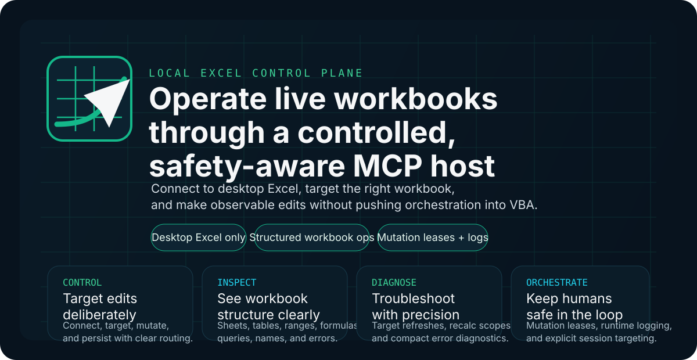
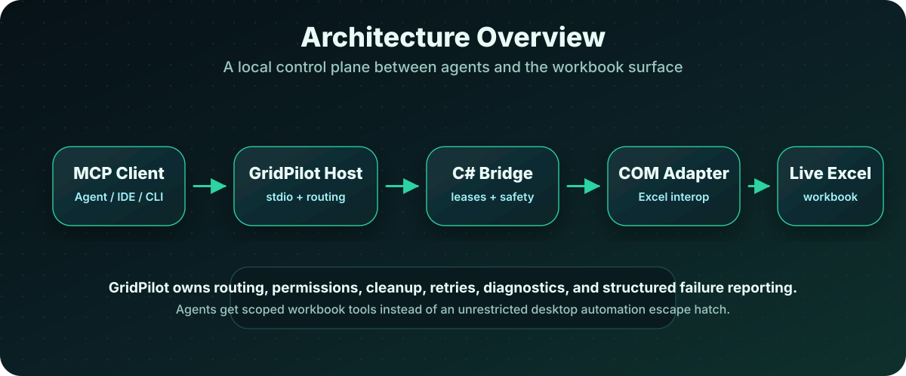
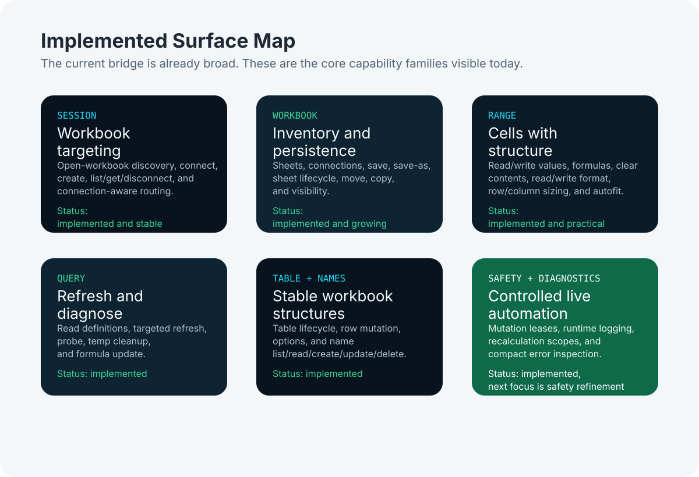
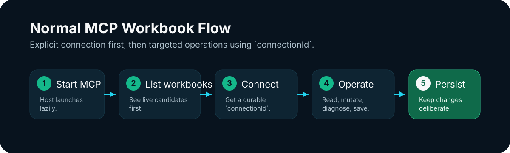

GridPilot MCP
Let coding agents work with live Excel — safely, visibly, and under control.

GridPilot MCP is a local automation bridge for Microsoft Excel. It gives AI coding agents a controlled way to inspect, edit, refresh, and diagnose real workbooks running on the desktop.
Excel remains the data plane. GridPilot becomes the control plane.
Instead of relying on fragile desktop guesswork, agents interact through scoped MCP tools for workbook sessions, ranges, formulas, worksheets, tables, Power Query definitions, names, formatting, refreshes, and diagnostics.
The goal is not unattended spreadsheet chaos. The goal is safe human + agent collaboration on the Excel files people actually use.
The Problem
Excel often holds the real operational surface: reporting logic, financial models, planning sheets, cleanup workflows, and fragile business-critical workbooks that people still open and edit by hand.
Coding agents are good at source files. They are much less trustworthy when the job becomes “go click around in a live spreadsheet and hope nothing breaks.”
GridPilot MCP exists to close that gap: give agents a safe, inspectable path into live Excel without pretending a workbook is just another text file.
The GridPilot Approach
- Excel stays the data plane.
- The C# bridge owns session routing, safety, cleanup, retries, diagnostics, and COM interaction.
- Agents get targeted workbook tools, not a vague “run whatever in Excel” escape hatch.
- Validation stays mock-first, with live Excel remaining opt-in.
- Human + agent coexistence is a first-class design constraint.
How It Works
An MCP client starts the host, then either attaches to a live workbook session or creates a new bridge-owned one. Later tool calls use a connectionId so operations stay scoped to the intended workbook.
Calls are routed through a C# service layer and a COM adapter that keeps Excel-specific details isolated. Logs and structured errors make failures inspectable instead of mysterious.

What Agents Can Do Today

- Sessions and routing: discover open workbooks, connect by name or path, create new workbooks, and route later calls through
connectionId. - Workbook structure: inspect sheets, tables, queries, and connections, then save, rename, reorder, copy, move, or hide worksheets.
- Ranges and formulas: read and write values, formulas, formatting, clear content, size rows and columns, and autofit.
- Power Query: inspect definitions, run targeted refreshes, probe diagnostics, and clean up temporary queries.
- Tables and names: manage table lifecycle and workbook or worksheet-scoped names.
- Diagnostics and safety: recalculate in scope, inspect errors, enforce mutation leases, and emit structured failures plus runtime logs.
Typical Flow

Use runtime logging when you need real troubleshooting data.
- start or register the MCP host
- attach to an open workbook or create a new session
- connect and receive a
connectionId - inspect, edit, refresh, or diagnose through scoped tools
Safety Model
connectionIdkeeps calls routed to the intended workbook session.- Attached sessions use mutation-permission leases before edits are allowed.
- Recalculation can be scoped to workbook, worksheet, or range targets.
- Failures come back as structured results instead of hidden UI side effects.
- Runtime logging makes host, bridge, and COM behavior inspectable.
- Validation stays mock-first, while live Excel coverage remains opt-in.
Getting Started
The operational setup and troubleshooting reference lives here:
For Contributors
Contributor note: the codebase still uses provisional ExcelMcp.* assembly and namespace names internally. The external project identity is GridPilot MCP.
Current Priorities
- improve attached-session unsafe-UI detection as the live editing surface expands
- strengthen coordination for concurrent human and agent workbook editing
- continue expanding workbook surfaces without losing safety, observability, or testability